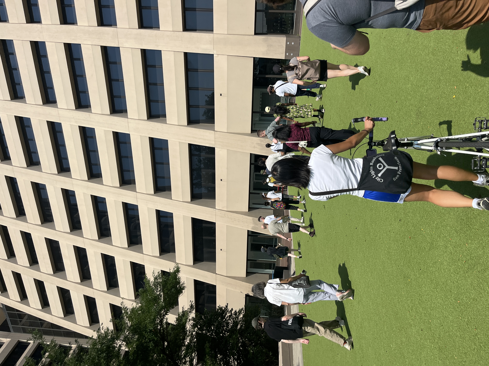
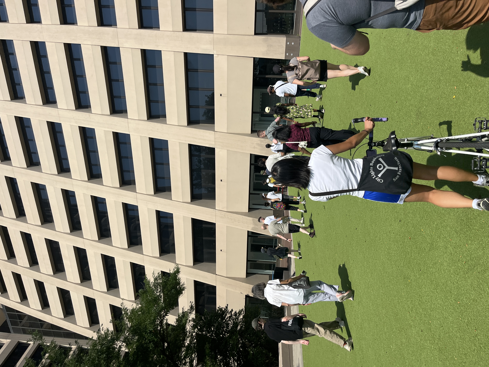

For Walking the Internet, we met on three concurrent Saturdays in different locations in NYC (Times Square, Midtown, and FiDi) to explore the city's physical and cultural infrastructure...
Featuring special guest Ingrid Burrington, author of Networks of New York: An Illustrated Field Guide to Internet infrastructure

Looking for the internet, we looked all around: above and below...

 

We also explored many POPS (Privately Owned Public Spaces), which feel like a useful allegory to the current internet.

Thanks to teachers Alex and Laurel, and everyone who joined us for each walk! We would love to do this again someday.
Posted by Laurel Schwulst on 9/20/2025
Subscribe,
All Transmissions